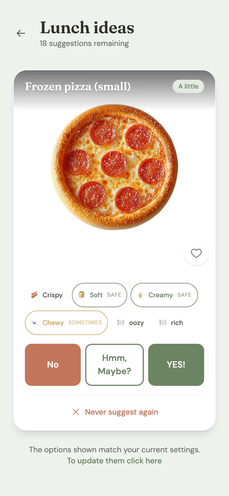
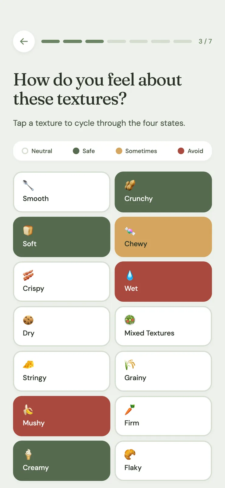
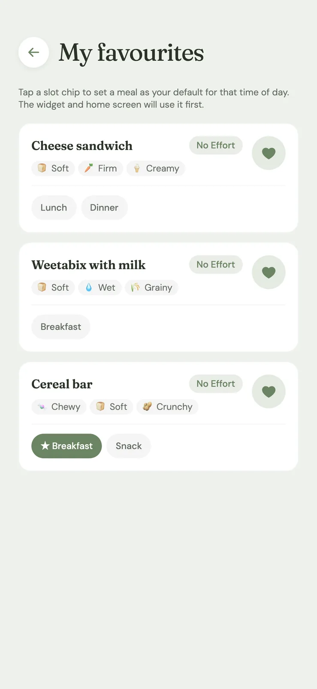
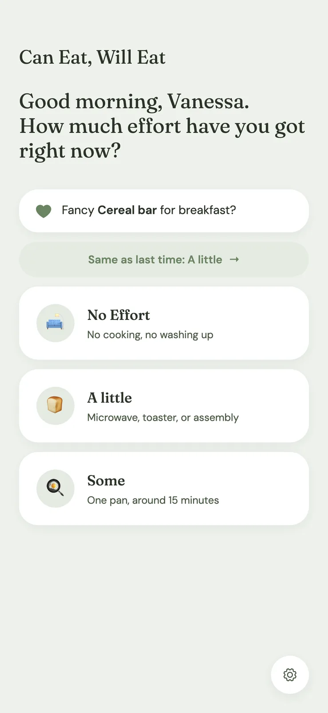

The first thing Shamalama ever built wasn't for a client. It was for family, and it's still helping, every day.
Download on the App Store ↗
Built for Vanessa's daughter, who has sensory needs around food. ♥
For a lot of people, "what shall I eat?" is a passing thought. For someone with sensory needs around food, it can be one of the hardest, most loaded questions of the day. Can Eat, Will Eat was made to take some of that weight away, a calm, private space that turns an overwhelming decision into a gentle, manageable one.
It started as a personal act of love, and it quietly became something bigger: proof that a heartfelt idea, built with care, can reach the App Store, and stay there, helping.
A calm, judgement-free way to find foods that feel safe and right, at the person's own pace.
Shaped by a real person's sensory needs, not a generic template, accessibility came first, not last.
One small app that makes one big daily question that bit easier to answer. That was always the whole point.



Can Eat, Will Eat was the test bed for how Shamalama works now, accessibility-first thinking, native craft, and shipping something real and useful quickly. Every client project since has carried a little of its DNA.
The ones built with heart are our favourite kind. Tell us about yours.